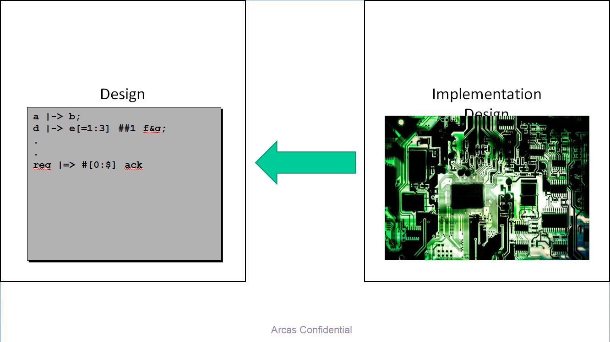

应用于芯片设计的功能特性验证，正在越来越多的应用场景取代仿真验证。其使用方法是用户根据设计要求提供验证所需的属性和约束，用数学归纳和推理的方法回答这些属性是否正确。如果不正确会自动生成可用于仿真的激励链，以便于查错。形式验证的数学严密性使它成为对安全可靠性要求极高的芯片设计的必备选择。
相对于仿真验证，形式验证的优点包括不需要用户去生成测试激励，一条属性的真伪结论是基于严格的数学证明 – 证明为真的属性在任何激励下再进行仿真都不会出错。形式验证的完备性取决于属性的完备性，而后者可以基于设计要求建立清晰和明确的模型，这和一直困扰仿真验证的从本质上无法完善的仿真覆盖率相比有极大的优势。由于属性可以基于设计内部的任何信号和运行场景，形式验证还具有白箱验证的优点，而仿真只能在输出端决定对错。另外，功能特性形式验证适用于设计的各个阶段，特别是早期在模块级设计阶段，极难建立仿真环境的情况下，有利于早期发现设计错误，减少设计迭代。